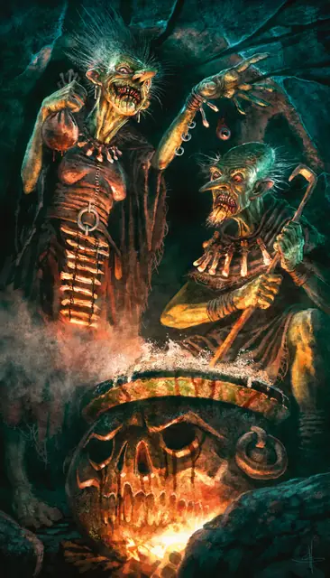

Зелёная карга
Green Hag
Средняя Фея, Нейтральная Злая

Класс Защиты 17 Инициатива +1 (11)
Хиты 82 (11к8 + 33)
Скорость 30 футов, Плавания 30 футов
| мод | спас | ||
|---|---|---|---|
| СИЛ | 18 | +4 | +4 |
| ЛОВ | 12 | +1 | +1 |
| ТЕЛ | 16 | +3 | +3 |
| мод | спас | ||
|---|---|---|---|
| ИНТ | 13 | +1 | +1 |
| МДР | 14 | +2 | +2 |
| ХАР | 14 | +2 | +2 |
Чувства Тёмное зрение 60 футов, пассивное Восприятие 14
Языки Общий, Сильван, Эльфийский
Опасность 3 (700 опыта; БВ +2)
Особенности
Амфибия. Карга может дышать как воздухом, так и под водой.
Магия ковена. Пока карга находится в пределах 30 футов от как минимум двух своих союзников, она может сотворить одно из следующих заклинаний, не нуждаясь в Материальных компонентах, используя обычное время сотворения заклинания и используя Интеллект как заклинательную характеристику (Сл спасброска заклинаний 11): Гадание, Обретение фамильяра, Опознание, Поиск объекта, Наблюдение или Невидимый слуга. Карга должна завершить Долгий отдых, прежде чем снова сможет использовать эту особенность для сотворения заклинания.
Подражание. Карга может подражать звукам животных и голосам гуманоидов. Слышащее такие звуки существо может понять, что это подражание, только если преуспеет в проверке Мудрости (Проницательность) Сл 14.
Действия
Мультиатака. Карга совершает две атаки Когтями.
Когти. Бросок рукопашной атаки: +6, досягаемость 5 фт. Попадание: 8 (1к8 + 4) Рубящего урона плюс 3 (1к6) урона Ядом.
Сотворение заклинаний. Карга сотворяет одно из следующих заклинаний, не нуждаясь в Материальных компонентах (заклинательная характеристика — Харизма, Сл спасброска заклинаний 12, +4 к попаданию атак заклинаний):
Неограниченно: Луч болезни, версия 3-го уровня, Малая иллюзия, Маскировка, Невидимость, Невидимая, Пляшущие огоньки
Бонус мастерства +2
Среда обитания Болота, Леса, Холмы
Сокровища Магические
Зелёная карга
Ведьма диких дебрей и мерзости
Зелёные карги отравляют всё чистое и прекрасное своей тошнотворной магией. Эти древние ведьмы способны как в одиночку, так и в составе ковена призывать жуткие силы, чтобы наводить порчу и губительный рок на тех, кто вызвал их гнев. Зелёные карги — искусные обманщицы, которые используют иллюзии, чтобы принимать безобидный облик и заманивать невинных в смертельную ловушку. Как правило, они в тайне приводят своих жертв в сюрреалистические логова, чтобы превратить их в вечных пленников — или в чудовищное блюдо.
Нередко зелёным каргам ведомы странная магия или забытые знания о слабостях злодеев, местоположении потерянных сокровищ или способах снять проклятья. Они готовы обменять эти знания на редкие магические или символические сокровища.
Совершите бросок по таблице «Сделка с зелёной каргой» для вдохновения или выберите сами, что зелёная карга хочет в обмен на свои секреты.
Сделка с зелёной каргой
| 1к6 | Зелёная карга готова поделиться своим знанием в обмен на... |
| 1 | Воспоминания о возлюбленной. |
| 2 | Котёл соперницы. |
| 3 | Услугу, которую она попросит в будущем. |
| 4 | Цветок из тайного сада в Стране Фей. |
| 5 | Добровольный подарок от юголота. |
| 6 | Флакон со слезами правителя. |